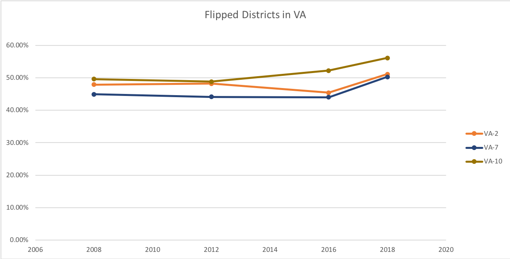

This is the data from all the congressional districts in VA from the 2008, 2012, 2016,
presidential elections. The goal is to look at the data and see if different types of districts
are trending in different ways. Also, I hope to look later at how demogrpahics may be playing a
role in voter preferences.
Competitive Districts in VA that flipped from the GOP to Democrats
